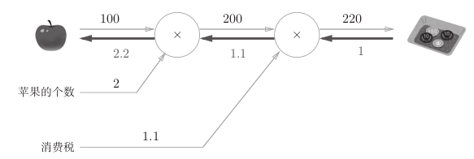
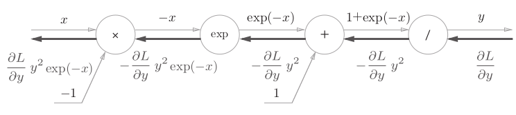
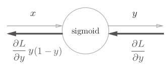
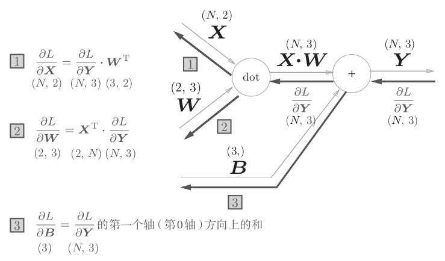
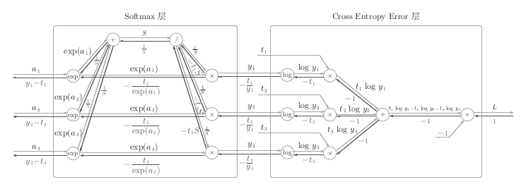
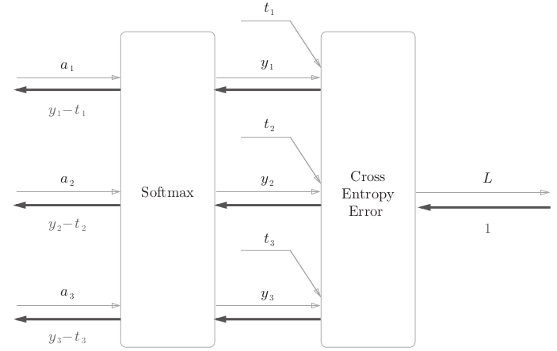

4. 误差反向传播法¶
4.1. 计算图¶
用计算图求解
为何要使用计算图
- 局部计算，简化问题
- 可以将中间结果保存起来
- 可以通过反向传播高效计算导数
{kind=link}
{kind=link}
{kind=link}
4.4. 层的实现¶
层的实现中有两个共通的方法forward()和backword()。
简单层的实现
乘法层
class MulLayer: def __init__(self): # 初始化实例变量x和y，用于保存正向传播时的输入值 self.x = None self.y = None def forward(self, x, y): self.x = x self.y = y out = x * y return out def backword(self, dout): dx = dout * self.y # 翻转x和y dy = dout * self.x return dx, dy
加法层
class AddLayer: def __init__(self): pass def forward(self, x, y): out = x + y return out def backward(self, dout): dx = dout * 1 dy = dout * 1 return dx, dy
激活函数层的实现
在神经网络层的实现中，一般假定forward()和backward()的参数是NumPy数组。
ReLU层
class Relu: def __init__(self): self.mask = None def forward(self, x): self.mask = (x <=0 ) out = x.copy() out[self.mask] = 0 return out def backward(self, dout): dout[self.mask] = 0 dx = dout return dx
Sigmoid层
 class Sigmoid: def __init__(self): self.out = None def forward(self, x): out = 1 / (1 + np.exp(-x)) self.out = out return out def backward(self, dout): dx = dout * (1 - self.out) * self.out return dx
Affine层的实现
神经网络的正向传播中进行的矩阵乘积运算在几何学领域被成为“仿射变换”
class Affine: def __init__(self, W, b): self.W = W self.b = b self.x = None self.dW = None self.db = None def forward(self, x): self.x = x out = np.dot(x, self.W) + self.b return out def backword(self, dout): dx = np.dot(dout, self.W.T) self.dW = np.dot(self.x.T, dout) self.db = np.sum(dout, axis=0) return dx
Softmax-with-Loss
神经网络中进行的处理有推理和学习两个阶段。推理通常不使用softmax层，学习阶段需要softmax层。
 class SoftmaxWithLoss: def __init__(self): self.loss = None # 损失 self.y = None # softmax 输出 self.t = None # 监督数据（one-hot vector） def forward(self, x, t): self.t = t self.y = softmax(x) self.loss = cross_entropy_error(self.y, self.t) return self.loss def backward(self, dout=1): batch_size = self.t.shape[0] dx = (self.y - self.t) / batch_size return dx
{kind=link}
4.5. 误差反向传播法的实现¶
误差反向传播法的神经网络
class TwoLayerNet: def __init__(self, input_size, hidden_size, output_size, weight_init_std=0.1): # 初始化权重 self.param = {} self.param['W1'] = weight_init_std * \ np.random.rand(input_size, hidden_size) self.param['b1'] = np.zeros(hidden_size) self.param['W2'] = weight_init_std * \ np.random.rand(hidden_size, output_size) self.param['b2'] = np.zeros(output_size) # 生成层 self.layers = OrderedDict() self.layers['Affine1'] = \ Affine(self.param['W1'], self.param['b1']) self.layers['Relu'] = Relu() self.layers['Affine2'] = \ Affine(self.param['W2'], self.param['b2']) self.lastLayer = SoftmaxWithLoss() def predict(self, x): for layer in self.layers.values(): x = layer.forward(x) return x def loss(self, x, t): y = self.predict(x) return self.Lastlayer.forward(y, t) def accuracy(self, x, t): y = self.predict(x) y = np.argmax(y, axis=1) if t.ndim != 1: t = np.argmax(t, axis=1) accuracy = np.sum(y == t) / float(x.shape[0]) return accuracy # x:输入数据，t:监督数据 def gradient(self, x, t): # forward self.loss(x, t) # backward dout = 1 dout = self.Lastlayer.backward(dout) layers = list(self.layers.values()) layers.reverse() for layer in layers: dout = layer.backward(dout) # 设定 grads = {} grads['W1'] = self.layers['Affine1'].dW grads['b1'] = self.layers['Affine1'].db grads['W2'] = self.layers['Affine2'].dW grads['b2'] = self.layers['Affine2'].db return grads
误差反向传播法的学习
# 读入数据 (x_train, t_train), (x_test, t_test) = \ load_mnist(normalize=True, one_hot_label=True) network = TwoLayerNet(input_size=784, hidden_size=50, output_size=10) iters_num = 10000 train_size = x_train.shape[0] batch_size = 100 leraning_rate = 0.01 train_loss_list = [] train_acc_list = [] test_acc_list = [] iter_per_epoch = max(train_size / batch_size, 1) for i in range(iters_num): batch_mask = np.random.choice(train_size, batch_size) x_batch = x_train(batch_mask) t_batch = t_train(batch_mask) # 通过误差反向传播法求梯度 grad = network.gradient(x_batch, t_batch) # 更新 for key in ('W1', 'b1', 'W2', 'b2'): network.params[key] -= learning_rate * grad[key] loss = network.loss(x_batch, t_batch) train_loss_list.append(loss) if i % iter_per_epoch == 0: train_acc = network.accuracy(x_train, t_trian) test_acc = network.accuracy(x_test, t_test) train_acc_list.append(train_acc) test_acc_list.append(test_acc) print(train_acc, test_acc)